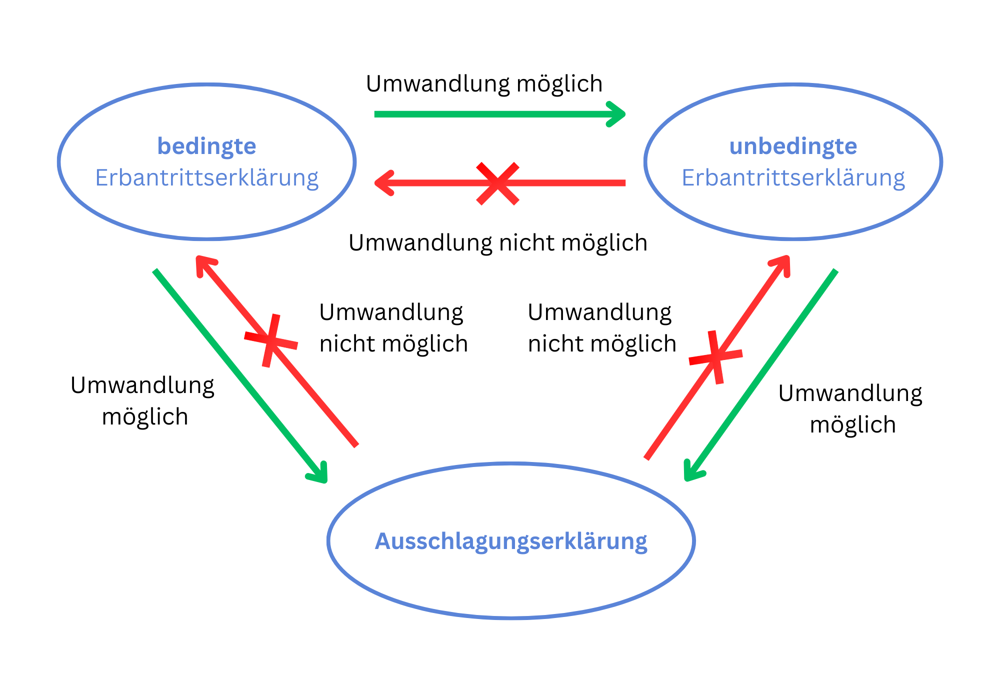

Erbschaft annehmen oder ausschlagen?
Wenn man gesetzlicher oder testamentarischer Erbe ist, kann sich unter Umständen die Frage stellen, ob es sinnvoll ist, eine Erbschaft anzunehmen, oder ob es doch besser ist, eine angefallene Erbschaft auszuschlagen. Mit der Übernahme einer Erbschaft können nämlich auch erhebliche Verpflichtungen verbunden sein. In Österreich ist niemand verpflichtet, eine Erbschaft anzunehmen. Erfahren Sie hier, wann eine Annahme bzw. Ausschlagung der Erbschaft sinnvoll ist, und welche Erbantrittserklärung (unbedingt oder bedingt) wann in Frage kommt.
Annahme oder Ausschlagung der Erbschaft?
Gemäß § 157 Abs 1 AußStrG hat der Gerichtskommissär (Notar) die nach der Aktenlage in Frage kommenden Erben nachweislich aufzufordern, ob und wie diese die Erbschaft antreten, oder ob sie diese ausschlagen wollen. Der Antritt einer Erbschaft bedarf somit in Österreich einer ausdrücklichen schriftlichen Erklärung des Erben, nämlich der sog. "Erbantrittserklärung". Bleibt ein Erbe untätig und hält vom Gerichtskommissär gesetzte Fristen nicht ein, so gilt dies als Ausschlagung der Erbschaft, sofern der säumige Erbe die Erbantrittserklärung nicht nachholt. Ein Nachholen der Erbantrittserklärung ist bis zur Einantwortung möglich. Hat der Gerichtskommissär in Folge des Untätigbleibens eines Erben das Verfahren mit den anderen Erben fortgeführt und ist zwischenzeitlich ein verfahrensbeendender Einantwortungsbeschluss ergangen, so kann die Erbantrittserklärung nicht mehr nachgeholt werden.
Nach geltender Rechtslage ist es also nicht möglich, durch bloßes Untätigbleiben in einem Verlassenschaftsverfahren, also wenn man an einer Erbschaft "kein Interesse" hat, sich eine Haftung für Verbindlichkeiten des Erblassers "einzutreten".
Eine Ausschlagung der Erbschaft ist insbesondere dann ratsam, wenn eine Verlassenschaft überschuldet ist, also mehr Schulden als Vermögenswerten vorhanden sind. In diesem Fall würde man bei einer unbedingten Erbantrittserklärung sogar mehr Schulden als Vermögenswerte "erben". Auch bei einer bedingten Erbantrittserklärung (dazu siehe sogleich) müsste man sofort die erlangten Vermögenswerte wieder zur Befriedigung der Gläubiger verwenden, sodass dies ein "Nullsummenspiel" mit bloß organisatorischem Aufwand wäre. Auch bei einer vermögenslosen Verlassenschaft, also wo es weder Vermögenswerte noch Verbindlichkeiten gibt, wäre ein Erbantritt nur mit Aufwand verbunden.
Eine Ausschlagung kann trotz erheblicher Vermögenswerte dann sinnvoll sein, wenn Unsicherheiten bei den Verbindlichkeiten des Erblassers bestehen, etwa wenn der Erblasser in Schadenersatzklagen oder sonstige Gerichtsverfahren involviert war. In diese Gerichtsverfahren würde man nämlich als Erbe mit Rechtskraft der Einantwortung eintreten und beispielsweise für Prozesskostenverpflichtungen in diesen Gerichtsverfahren persönlich haften. Ein Antritt der Erbschaft ist also nur sinnvoll, wenn es Vermögenswerte gibt und die Verbindlichkeiten des Erblassers überschaubar sind bzw. deren Risiko kalkulierbar ist.
Ein weiterer Grund für eine Ausschlagung der Erbschaft könnte sein, wenn der Erblasser ein Unternehmen betrieben hat, und der Erbe mit der Fortführung dieses Unternehmens persönlich überfordert wäre. Zudem wäre hier die unbeschränkte unternehmensrechtliche Haftung zusätzlich zur erbrechtlichen Haftung zu beachten, selbst wenn eine bedingte Erbantrittserklärung abgegeben wird. Die unbeschränkte unternehmensrechtliche Haftung kann allerdings abgewendet werden, wenn das Unternehmen spätestens binnen 3 Monaten ab Einantwortung eingestellt wird oder wenn ein Haftungsausschluss nach § 38 Abs 4 UGB im Firmenbuch eingetragen wird (§ 40 UGB). Dennoch würde selbst bei einer bedingten Erbantrittserklärung eine Haftung für unternehmensbezogene Verbindlichkeiten bis zum Wert der Erbschaft bestehen. Ein Erbantritt kann allerdings durchaus Sinn machen, wenn (1) neben dem Unternehmen andere relevante Vermögenswerte wie z.B. Immobilien bestehen, (2) die unternehmensbezogenen Verbindlichkeiten des Erblassers überschaubar sind und (3) das Unternehmen - wenn es nicht fortgeführt wird - kurz nach Einantwortung eingestellt wird.
Umgekehrt gibt es Situationen, in denen ein Antritt der Erbschaft aus Gläubigerschutzgründen alternativlos ist. Ist der Erbe nämlich selbst Gläubigern ausgesetzt, so hätten die Gläubiger nach der Einantwortung Zugriff auf das ererbte Vermögen. Der Erbe könnte nun versucht sein, die Erbschaft auszuschlagen, damit z.B. dessen Kinder die Erbschaft antreten, um einen Zugriff der Gläubiger zu verhindern. Die angefallene Erbschaft stellt allerdings - auch ohne Erbantritt - bei wirtschaftlicher Betrachtungsweise bereits einen Vermögenswert dar. Schlägt der Erbe die Erbschaft aus, um damit einen Zugriff der Gläubiger zu verhindern, erfüllt dies den Straftatbestand der betrügerischen Krida (§ 156 StGB). Zudem können Gläubiger des Erben die Ausschlagungserklärung des Erblassers nach den Bestimmungen der Einzelanfechtung (§§ 438 ff EO, früher AnfO) wegen Gläubigerbenachteiligung gerichtlich für unwirksam erklären lassen. In diesem Fall könnten die Gläubiger den nach der Ausschlagung nächstfolgend zum Zug gelangenden Erben direkt auf Zahlung klagen. Eine Ausschlagung von Erbschaften ist sohin in derartigen Situationen absolut nicht empfehlenswert. Die vorstehenden Ausführungen gelten freilich nur für eine "finanziell attraktive" Erbschaft. Eine ausgeschlagene Erbschaft, die (offenkundig) überschuldet oder vermögenslos ist, stellt bei wirtschaftlicher Betrachtungsweise keinen Vermögenswert dar, der Gegenstand einer betrügerischen Krida oder Gläubigeranfechtung sein kann.
Eine Ausschlagungserklärung (sog. "negative Erbantrittserklärung") kann nicht widerrufen werden, umgekehrt kann aber eine Erbantrittserklärung später in eine Ausschlagungserklärung umgewandelt werden (§ 806 ABGB).
Bedingte oder unbedingte Erbantrittserklärung?
Das Gesetz sieht zwei Möglichkeiten vor, wie eine Erbschaft angetreten kann, nämlich unbedingt oder bedingt (d.h. unter Vorbehalt der Rechtswohltat des Inventars.
Bei einer unbedingten Erbantrittserklärung haftet der Erbe für sämtliche Verbindlichkeiten des Erblassers persönlich und der Höhe nach unbeschränkt. Die Erbenhaftung kann somit über das geerbte Vermögen deutlich hinausgehen. Eine unbedingte Erbantrittserklärung ist daher nur dann sinnvoll, wenn der Erbe die wirtschaftliche Gebarung des Erblassers gut kannte und unbekannte Verbindlichkeiten so gut wie ausgeschlossen sind. Der einzige Vorteil einer unbedingten Erbantrittserklärung ist, dass kein Inventar vom Gerichtskommissär (Notar) errichtet werden muss, weil der Erbe schlicht eine selbst erstellte Vermögenserklärung abgeben muss. Damit kann das Verlassenschaftsverfahren zügiger durchgeführt werden und sind die Gebühren des Gerichtskommissärs (Notar) mangels Inventarerrichtung auch typischerweise geringer.
Bei einer bedingten Erbantrittserklärunghaftet der Erbe ebenso persönlich, aber der Höhe nach beschränkt mit dem Wert des geerbten Vermögens. Aus diesem Grund muss der Gerichtskommissär bei einer bedingten Erbantrittserklärung auch amtswegig ein Inventar errichten, in welchem die Vermögenswerte und Verbindlichkeiten des Erblassers zum Todeszeitpunkt beschrieben werden. Das Inventar hat Beweisfunktion, insbesondere zur Bestimmung des Ausmaßes der Erbenhaftung. Dennoch ist der Gegenbeweis, d.h. wenn das Inventar unrichtig sein sollte, zulässig. Eine bedingte Erbantrittserklärung ist also insbesondere dann empfehlenswert, wenn es ausreichend zu erbendes Vermögen gibt, aber später zu Tage tretende Verbindlichkeiten nicht ausgeschlossen werden können (z.B. weil der Erblasser in einem beratenden Beruf mit erhöhten Haftungsrisiken tätig war oder weil der Erbe die wirtschaftliche Gebarung mangels ausreichendem Kontakt zum Erblasser nicht kannte). Da die Haftung auf das geerbte Vermögen wertmäßig beschränkt ist, kann die Erbschaft im schlimmsten Fall - wenn diese noch nicht verbraucht wurde - ein "Nullsummenspiel" sein. Theoretisch müsste ein umsichtiger Erbe das ererbte Vermögen 30 Jahre "zur Seite legen", bis alle kenntnisunabhängigen Verjährungsfristen für Schadenersatz verstrichen sind, und erst dann das "geerbte Vermögen" angreifen. In der Praxis machen das aber nur die wenigsten Erben, trotzdem sollte man aber eher auf Vermögenserhaltung ausgerichtet sein, und potenzielle Verbindlichkeiten zumindest im Blick haben.
Im Falle von mehreren Erben haften bei einer unbedingten Erbantrittserklärung alle Erben zur ungeteilten Hand. Bei einer bedingten Erbantrittserklärung haften die Erben nur anteilig im Ausmaß ihrer Erbquoten (§ 820, 821 ABGB). Hat auch nur ein Erbe eine bedingte Erbantrittserklärung abgegeben, kommt die Beschränkung der Erbenhaftung allen Erben zu gute, selbst wenn die anderen Erben eine unbedingte Erbantrittserklärung abgegeben haben. In diesem Fall ist vom Gerichtskommissär ebenso ein Inventar zu errichten.
Eine bedingte Erbantrittserklärung kann in eine unbedingte Erbantrittserklärung umgewandelt werden. Umgekehrt ist dies allerdings nicht möglich (§ 806 ABGB). Erbantrittserklärungen sind nicht widerruflich (d.h. sie können nicht einfach "zurückgenommen" werden, als ob man gar keine Erklärung abgegeben hätte), sie können allerdings in eine Aussschlagungserklärung umgewandelt werden.

Haben Sie noch Fragen zum Thema Annahme oder Ausschlagung einer Erbschaft?
Eine frühzeitige Beratung schafft Klarheit und hilft, Risiken im Verlassenschaftsverfahren rechtzeitig zu vermeiden. Ich unterstütze Sie bei einer rechtssicheren Einschätzung Ihrer Situation.